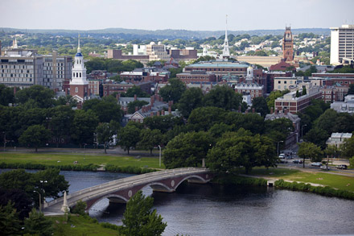

Harvard is a school in Cambridge, Massachusetts, which is just outside of Boston. It was founded in 1636, it is located in an urban setting, and its campus size encompasses 5,076 acres. It utilizes a semester-based academic calendar. Harvard has a student-faculty ratio of 7:1 with 75.6% of classes having fewer than 20 students. The top five majors at Harvard are social sciences, biology, history, mathematics, and psychology. The greek life at Harvard is unofficial, with hazing being one of the rituals to get into a fraternity or sorority. The mascot at Harvard is John Harvard, the man presumed to have founded Harvard (he didn’t actually, he just donated a lot of money to the school). Famous alumni from Harvard include Barack Obama, Mark Zuckerberg, Bill Gates, and Matt Damon.
